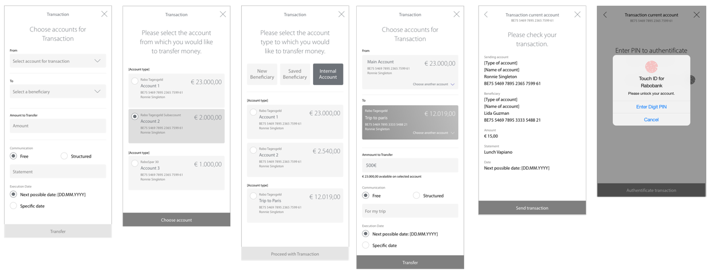

Rabobank
The modern way of Banking
Rabo Bank, serving over 9.5 million clients in the Netherlands, sought to develop a completely new application targeting German and Belgian markets. The app emphasized modern features to compete with contemporary fintech solutions, focusing on savings management with detailed analytics and streamlined money transfer capabilities.
My Role:
As Head of UX and Product Design, I led the research, ideation, feature definition, and user testing phases. I was responsible for persona development, Kano analysis, wireframing, and overseeing the entire design process from concept to validation.
Problem Statement
Most banking products of larger banks are limited to the transfer of money and are missing more features to be innovative. When customers want to invest money, it is usually transferred to a savings account. However, the wiring to such accounts requires a visit or a phone call to the bank. How can you make new customers aware of the product and motivate them to change?
Our Goals for the App
- How can we create value for our customers?
- How can we generate a high frequency usage of the app?
These are the main goals we want to achieve with the app. Therefore we identified 5 qualities that we needed to address in order to create a product that can answer those 2 questions. Beginning with the main needs of potential customers, offering a smart way of saving money, being able to compete with the other products, in the process identify new opportunities and overall listening and building a better relation to the customers.
Discovery & co-creation phase
- User needs based on persona development
- Benchmarking to collect features and find the unique selling proposition for release 1 and how we market them.
- Kano-Analysis to define features from user perspective and define the roadmap, especially which will implemented first.
- Feasibility-check of features for the first release, especially by native app development.
- Rough concept of a target picture and the derived first release
Design thinking Workshop
Creating Personae
We analyzed the different needs through qualitative research where we had 15 in-depth interviews with banking customers that used different banking products. With the insights, we created 4 segments based on different criteria points, four interview partners per segment. Having these main segments, we created 4 scenario personae that represented different life paths: The Investor, the Long-term Saver, the Young Entrepreneur, and the Family Father. We then created high fidelity personas to use for customer journey analysis and different scenarios when creating the product.

Kano Analysis Framework
We used the Kano model to prioritize features based on user satisfaction and differentiation potential.
Basic Needs
Essential Features
- Virtual cards (Apple Pay, Google Pay)
- Contactless payment
- ATM access
- Transaction notifications
- Photo TAN authentication
- Money transfers
- Account statistics
- Biometric security
Performance Needs
Competitive Differentiators
- Fitbit/Garmin Pay compatibility
- Overdraft facilities
- Receipt scanning
- QR-code payments
- Multi-currency support
- Insurance management
- Shared accounts
- Integrated chat support
Delighters
Innovation Features
- Personal payment links
- Automated savings
- Peer-to-peer transfers
- Investment capabilities
- Smart speaker integration
- Savings goals
- Voice commands
- AI-powered chatbot
Concept Wireframes
User research revealed the primary app-opening motivation: balance verification. For multi-account users, maintaining holistic overview while enabling easy account switching proved critical.
Design Solution: Pie chart visualization displaying account distribution, navigable via tapping or swiping. Rapid new account creation implemented.
Key design decisions:
- Clear balance visibility at first glance
- Intuitive account switching mechanism
- Quick access to frequent actions
- Visual representation of savings distribution
Transaction Process
Being this the most used feature by the users we had to simplify the process. Also we had some reglamentations to follow for the Belgian market. But over all we managed to hide the complicated processing structure that happens in the backend.
Interface Design
Once the core functionalities were defined, we thought about how to design the interface so that the user could differentiate between the elements in it, e.g. we gave the users the possibility to add pictures to their savings accounts. That's an additional motivator to help achieve the savings goal. For the color palette, we have followed the Rabobank branding. Also, we have created an individual icon collection for the product.

User Testing & Validation
Agile iterative approach with user scenario testing at critical development stages, incorporating necessary refinements.
User testing session
Prototype validation
Eye-Tracking Analysis
Key screens underwent eye-tracking evaluation ensuring "the most important areas get the attention they need." This helped us validate our design decisions and make adjustments where user attention didn't match our expectations.
Key Findings & Learnings
Key Finding
Main Insight
"No matter how technically affine the users are, nobody wants to learn anything new."
Users expect familiar navigation patterns with invisible complexity management. Success emerges when common tasks become simplified.
Key Learnings
Project Takeaways
- Diverse savings behaviors require flexible solutions
- Users prioritize intuitive navigation over technical sophistication
- Optimal experiences make standard operations effortless
- Success depends on making complex banking feel simple